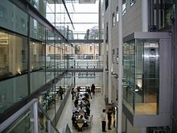
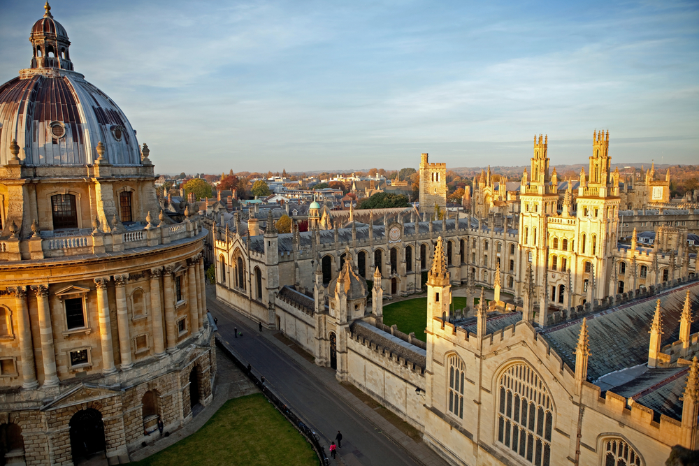
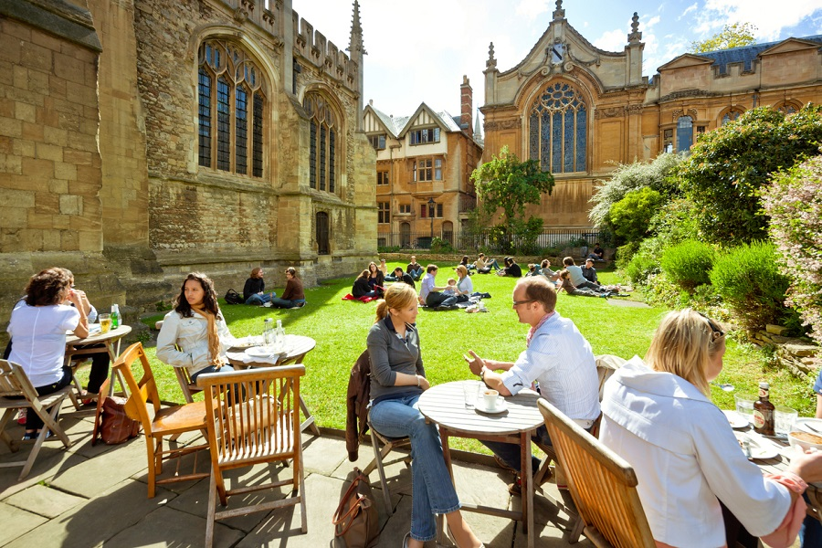
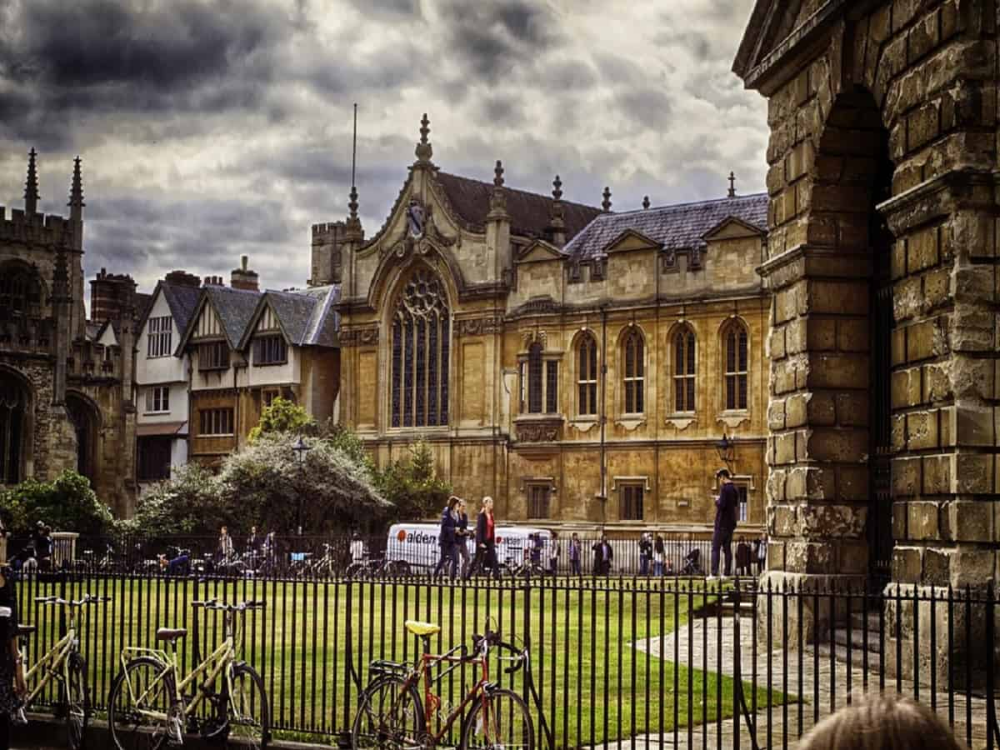

| Oxford University |
Oxford has a distinctive collegiate structure. Students and academics benefit from belonging both to the University, a large, internationally-renowned institution, and to a college or hall, a small, interdisciplinary academic community.
There are 39 Oxford colleges, which are financially independent and self-governing, but relate to the central University in a kind of federal system. There are also six permanent private halls, which are similar to colleges except that they tend to be smaller, and were founded by particular Christian denominations. The colleges and halls are close academic communities, which bring together students and researchers from different disciplines, cultures and countries. This helps to foster the outstanding research achievement that has made Oxford a leader in so many fields.
The central University is made up of many different sections, including academic and administrative departments, libraries and museums. There are roughly 100 major academic departments, which are overseen by the four academic divisions: Medical Sciences; Mathematical, Physical and Life Sciences; Humanities and Social Sciences.
 |
 |  |
|  |  |